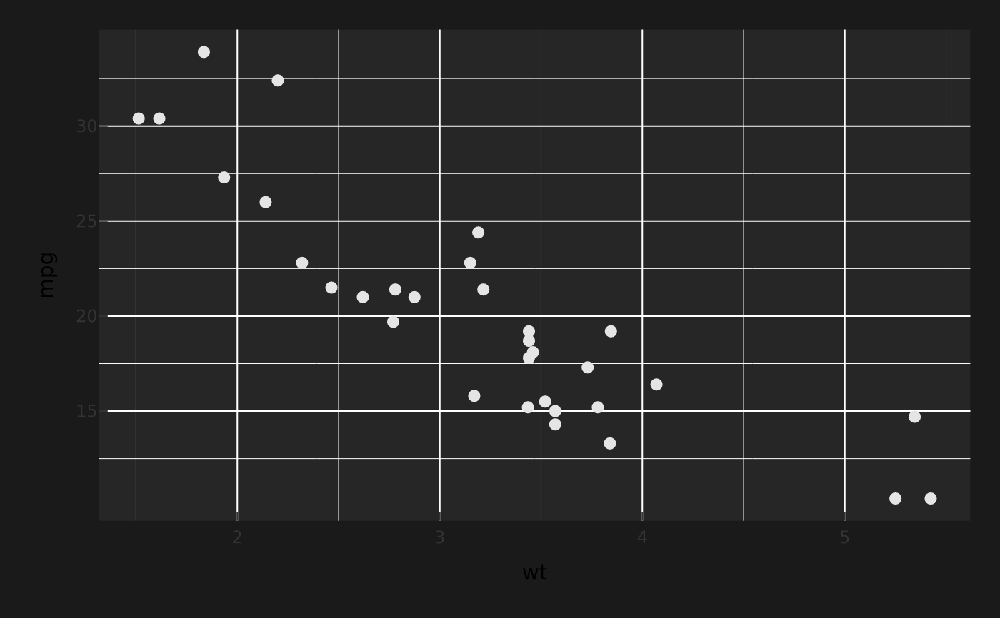

element_geom() sets the colours a theme gives marks whose colour or fill
is neither mapped nor set, as ggplot2's element_geom() does. Pass it as
theme(geom = element_geom(...)); dark themes such as theme_cyberpunk()
set a light ink so unmapped points, lines and text stay visible.
Usage
element_geom(
ink = NULL,
paper = NULL,
accent = NULL,
colour = NULL,
color = NULL,
fill = NULL
)Arguments
- ink
Foreground colour of marks (default
"black").- paper
Background colour marks are mixed against (default
"white").- accent
Colour of fitted smooths and contour lines (default
"#3366CC").- colour, color
A colour for every unmapped mark stroke, overriding the colour derived from
ink/accent.coloris an alias forcolour.- fill
A fill for every unmapped filled mark, overriding the fill derived from
ink/paper.
Value
An element object for the geom slot of theme().
Details
Each mark's default is derived from these as in ggplot2. Points, lines,
text, rules and error bars use ink; filled marks use a mix of ink and
paper (bars, histograms and areas col_mix(ink, paper, 0.35), the default
light-theme "grey35"); box plot, violin and label backgrounds use
paper; fitted smooths and contours use accent. A mapped scale and a
constant color = / fill = on a mark always win.
Examples
vplot(mtcars) |>
mark_point(x = wt, y = mpg) |>
theme(
plot.background = element_rect(fill = "grey10"),
panel.background = element_rect(fill = "grey15"),
geom = element_geom(ink = "grey90", paper = "grey15")
)
